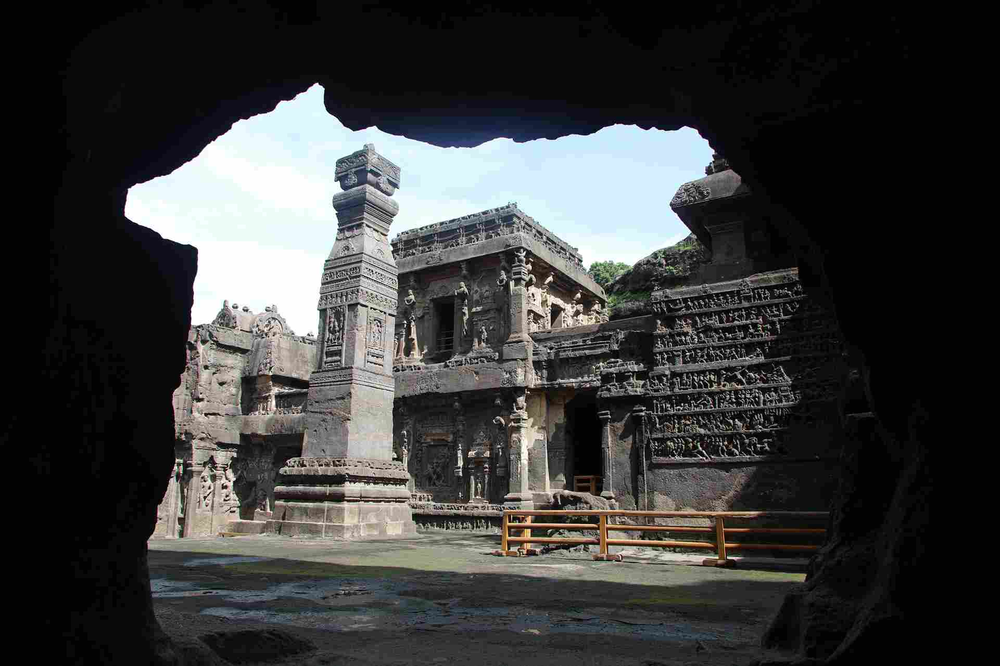
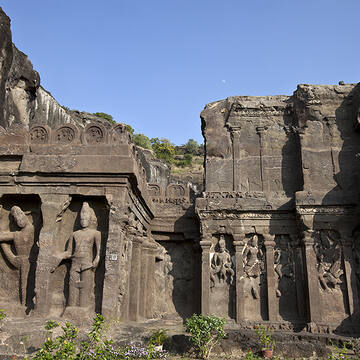
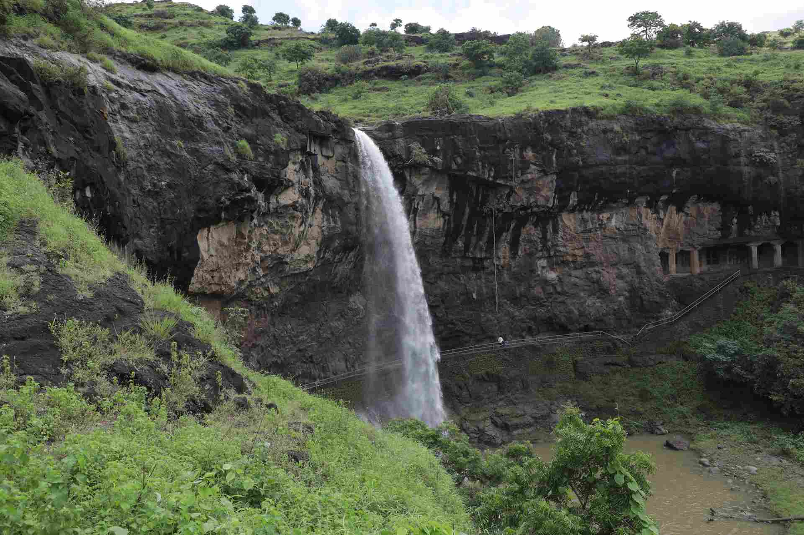
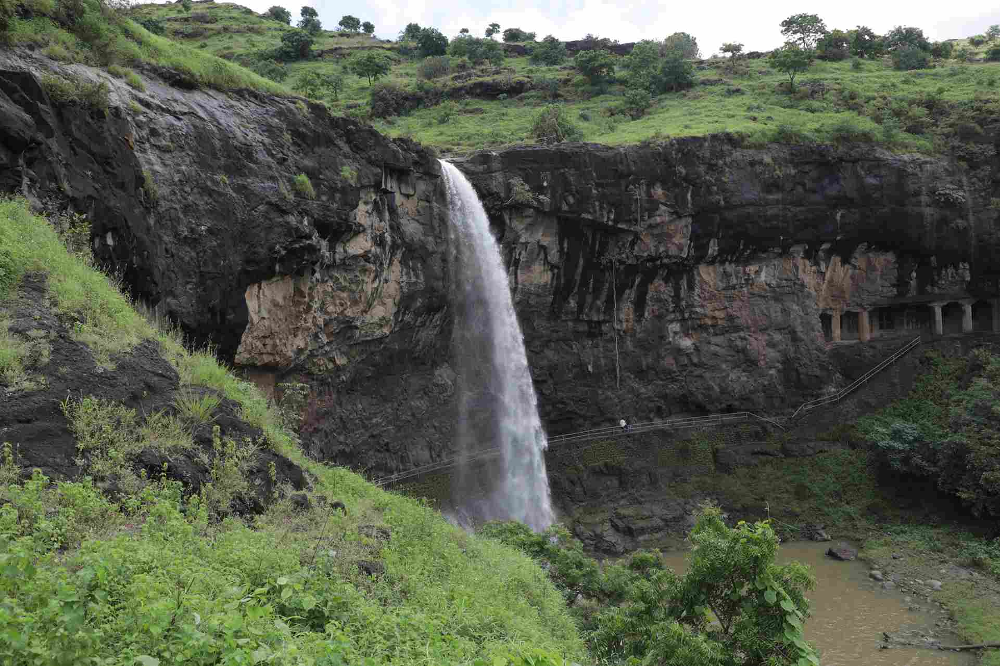
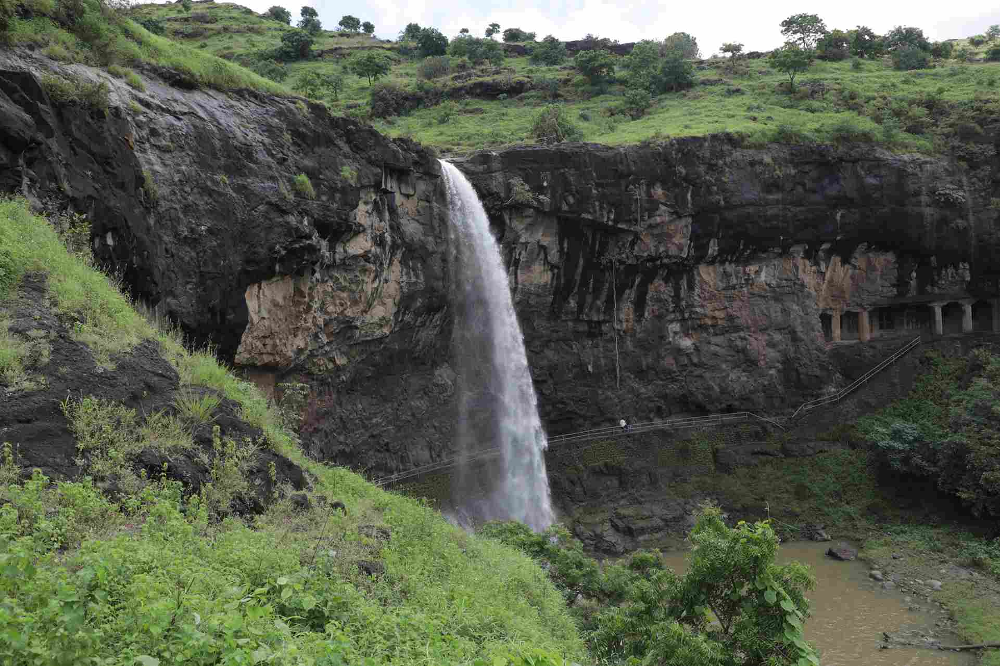
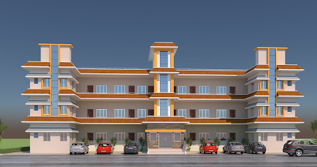
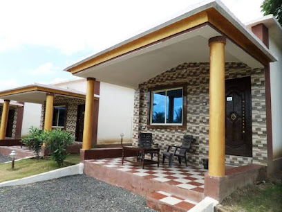
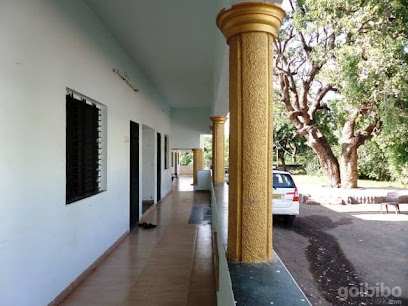

ELLORA
CAVES


 


Ellora Caves are a multi-religious rock-cut cave complex with inscriptions dating from the period 6th century CE onwards, located in the Aurangabad District of Maharashtra, India.There are over 100 caves at the site, all excavated from the basalt cliffs in the Charanandri Hills, 34 of which are open to public. These consist of 17 Hindu (caves 13–29), 12 Buddhist (caves 1–12) and 5 Jain (caves 30–34) caves.Each group represents deities and mythologies prevalent in the 1st millennium CE, as well as monasteries of each respective religion. They were built close to one another and illustrate the religious harmony that existed in ancient India. Because of their exceptional architecture of ancient India, the Ellora Caves were inscribed on the UNESCO World Heritage List in 1983.All of the Ellora monuments were built during the Satavahana period, which constructed part of the Vedic Dynasty and much later Buddhist caves and the Jain caves, were named.
The construction at Ellora has been studied since British colonial rule. However, the overlapping styles between the Buddhist, Hindu and Jain caves has made it difficult to establish agreement concerning the chronology of their construction.The disputes generally concern: one, whether the Buddhist or Hindu caves were carved first and, two, the relative dating of caves within a particular tradition. The broad consensus that has emerged is based on comparing the carving styles at Ellora to other cave temples in the Deccan region that have been dated, textual records of various dynasties, and epigraphical evidence found at various archaeological sites near Ellora and elsewhere in Maharashtra, Madhya Pradesh and Karnataka.Geri Hockfield Malandra and other scholars[who?] have stated that the Ellora caves had three important building periods: an early Hindu period (~550 to 600 CE), a Buddhist phase (~600 to 730 CE) and a later Hindu and Jain phase (~730 to 950 CE).
How to reach
Nearby Places

HOTEL KANHAIYA & RESTAURANT

Ellora Heritage Resort
